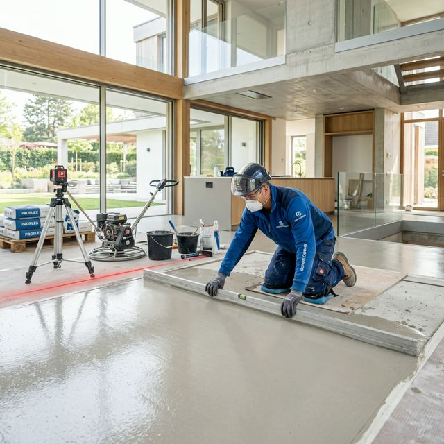

Pardoseli Industriale & Rezidențiale
Turnat Șape Nivelate
Pardoseala ta merită o bază solidă. Executăm șape semi-umede elicopterizate pentru o planeitate milimetrică.
Cere o Cotație
precision_manufacturing
Elicopterizare
Finisaj mecanic care elimină denivelările și creează o suprafață extrem de rezistentă.
thermostat
Încălzire în pardoseală
Șapele noastre au conductivitate termică optimă pentru sistemele moderne de încălzire.
speed
Uscare rapidă
Folosim aditivi performanți pentru a reduce timpul de așteptare până la montarea finisajului.